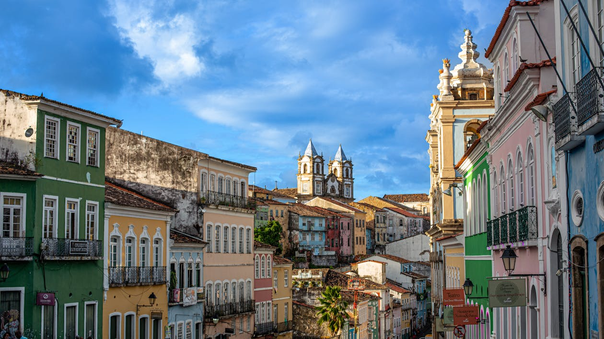

Características da região Nordeste
Dentro da região nordeste, estão situados nove estados litôraneos e ocupa uma área equivalante a 18,27% do territorio braileiro. Nessa região, o clima semiárido é o que predomina, principalmente no Sertão


Estados da região Nordeste
| Estados | Capital |
|---|---|
| Alagoas (AL) | Maceió |
| Bahia (BA) | Salvador |
| Ceará (CE) | Fortaleza |
| Maranhão (MA) | São Luís |
| Paraíba (PB) | João Pessoa |
| Pernambuco (PN) | Recife |
| Piauí (PI) | Teresina |
| Rio Grande do Norte (RN) | Natal |
| Sergipe (SE) | Aracaju |